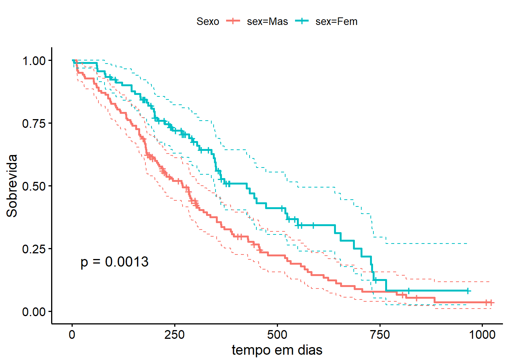
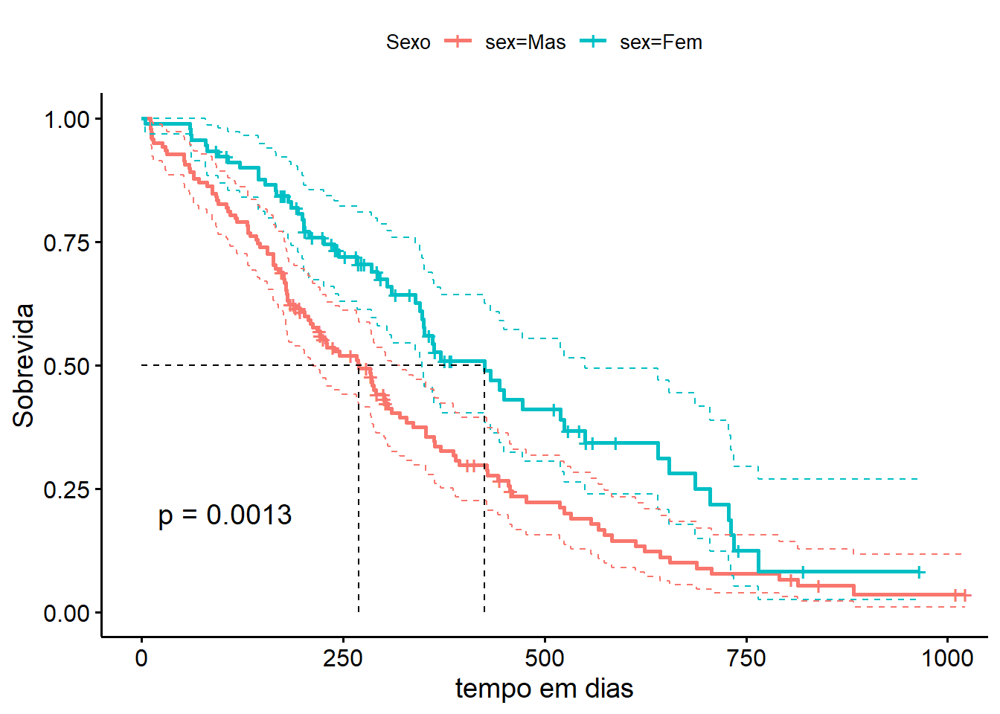
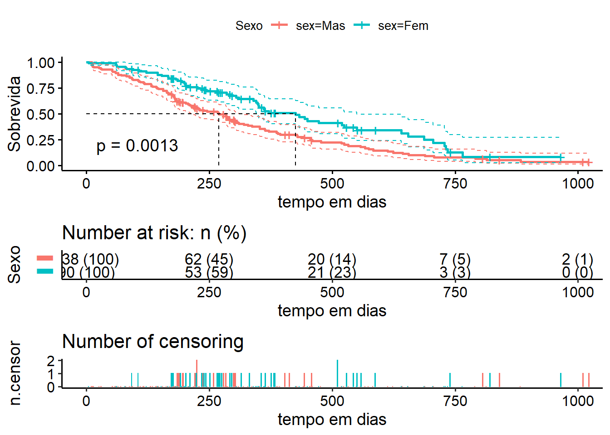
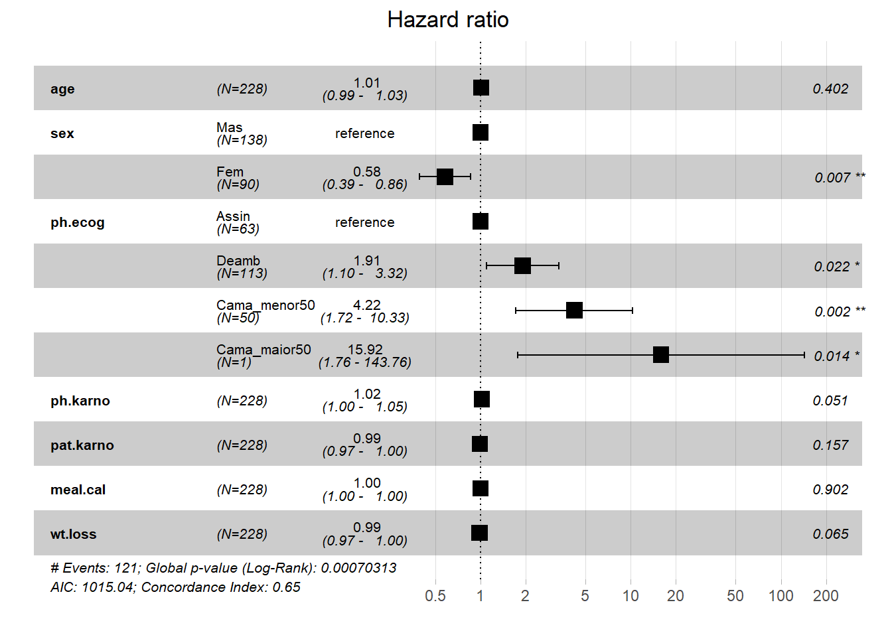
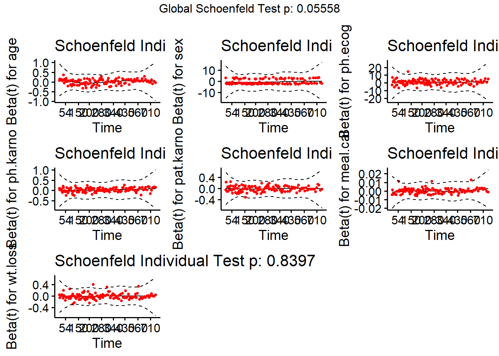

Capítulo9 Análise de sobrevivência - uma introdução
A área de análise de sobrevivência estuda o tempo até a ocorrência de um evento de interesse. Esse evento de interesse pode ser: óbito do paciente, cura de uma doença, recidiva de uma doença, cliente pagar um empréstimo bancário, falha de um componente eletrônico, parto, entre outros.
Um ponto importante é sempre ter muito bem definido qual é o evento de interesse e o ponto de partida. Se desejamos estudar o tempo até o óbito por câncer de pacientes submetidos à radioterapia, o evento é óbito por câncer e a origem é a data da realização da radioterapia.
No entanto, podem acontecer ocorrências que impedem a observação do evento de interesse, por exemplo: perda de seguimento, óbito por outra causa, efeitos colaterais, término do estudo, recusa em continuar participando, etc. Chamamos de censura essas ocorrências que impossibilitam a observação do evento de interesse.
Apesar de não observar o evento de interesse nesses cenários, temos uma informação bastante importante aí: o tempo do evento de interesse é maior que o tempo observado e essa informação deve ser levada em conta. Obviamente que não é considerada na análise como sendo o evento observado e por isso precisamos tabular os dados de maneira adequada para que o programa consiga identificar se cada observação foi o evento de interesse ou se censura. Na Figura abaixo está um exemplo de como tabular os dados:
Figure 9.1: Exemplo de tabulação para dados de sobrevivência.
No R, há dois pacotes muito úteis para analisar dados de sobrevivência: survival e survminer. Vamos então carregar esses pacotes (já instalados na minha máquina):
library(survival) # para análise de sobrevivência
library(survminer) # para análise de sobrevivênciaNo pacote survival tem uma base de dados salva chamada de lung, constituída de pacientes com câncer de pulmão avançado e o evento é o óbito. Se você rodar o código help(lung) vai aparecer a documentação dessa base de dados. Para carregar a base de dados, usamos a função data:
Agora sim: no objeto “lung” está a base de dados que vamos analisar. São as variáveis dessa base:
inst: código da instituição;
time: tempo de sobrevida (em dias);
status: status de evento e censura - 1 = censurado e 2 = óbito;
age: idade em anos;
sex: sexo - 1 = masculino e 2 = feminino;
ph.ecog: Score de desempenho ECOG avaliado pelo médico - 0 = assintomático, 1 = sintomático, mas completamente deambulador, 2 = na cama <50% do dia, 3 = na cama >50% do dia, mas não confinado à cama e 4 = confinado à cama (não tem nenhum caso na amostra na categoria 4);
ph.karno: Pontuação de desempenho de Karnofsky avaliado pelo médico (ruim=0-bom=100);
pat.karno: Pontuação de desempenho de Karnofsky informado pela(o) paciente;
meal.cal: Calorias consumidas nas refeições;
wt.loss: Perda de peso nos últimos seis meses.
Antes de começar as análises, vamos colocar labels nas variáveis categóricas por meio da função factor:
lung$sex <- factor(lung$sex,
levels = c("1", "2"),
labels = c("Mas", "Fem"))
lung$ph.ecog <- factor(lung$ph.ecog,
levels = c("0", "1", "2", "3"),
labels = c("Assin", "Deamb","Cama_menor50","Cama_maior50"))Uma primeira análise é estimar a curva de sobrevida. Um estimador não paramétrico para estimar a curva de sobrevivência na presença de dados censurados é o estimador de Kaplan-Meier (KM).
Vamos fazer as curvas de KM por sexo. Para isso, usamos a função survfit do pacote survival. Atribuimos o ajuste ao objeto “ajuste_sexo” para poder fazer tabelas e gráficos que usam esse objeto como argumento.
ajuste_sexo <- survfit(Surv(time = time, event = status) ~ sex, data = lung)
#Para fazer a tabela da estimativa de KM e intervalo de confiança:
surv_summary(ajuste_sexo, data = lung)## time n.risk n.event n.censor surv std.err upper lower
## 1 11 138 3 0 0.97826087 0.01268978 1.0000000 0.95423012
## 2 12 135 1 0 0.97101449 0.01470747 0.9994124 0.94342350
## 3 13 134 2 0 0.95652174 0.01814885 0.9911586 0.92309525
## 4 15 132 1 0 0.94927536 0.01967768 0.9866017 0.91336116
## 5 26 131 1 0 0.94202899 0.02111708 0.9818365 0.90383547
## 6 30 130 1 0 0.93478261 0.02248469 0.9768989 0.89448204
## 7 31 129 1 0 0.92753623 0.02379334 0.9718155 0.88527450
## 8 53 128 2 0 0.91304348 0.02627035 0.9612864 0.86722163
## 9 54 126 1 0 0.90579710 0.02745220 0.9558688 0.85834834
## 10 59 125 1 0 0.89855072 0.02860313 0.9503632 0.84956295
## 11 60 124 1 0 0.89130435 0.02972717 0.9447781 0.84085714
## 12 65 123 2 0 0.87681159 0.03190746 0.9333961 0.82365740
## 13 71 121 1 0 0.86956522 0.03296902 0.9276100 0.81515252
## 14 81 120 1 0 0.86231884 0.03401448 0.9217668 0.80670491
## 15 88 119 2 0 0.84782609 0.03606427 0.9099232 0.78996675
## 16 92 117 1 0 0.84057971 0.03707173 0.9039292 0.78166991
## 17 93 116 1 0 0.83333333 0.03806935 0.8978906 0.77341763
## 18 95 115 1 0 0.82608696 0.03905833 0.8918099 0.76520757
## 19 105 114 1 0 0.81884058 0.04003974 0.8856890 0.75703763
## 20 107 113 1 0 0.81159420 0.04101457 0.8795299 0.74890594
## 21 110 112 1 0 0.80434783 0.04198371 0.8733343 0.74081078
## 22 116 111 1 0 0.79710145 0.04294802 0.8671037 0.73275059
## 23 118 110 1 0 0.78985507 0.04390826 0.8608395 0.72472398
## 24 131 109 1 0 0.78260870 0.04486516 0.8545431 0.71672966
## 25 132 108 2 0 0.76811594 0.04677163 0.8418580 0.70083324
## 26 135 106 1 0 0.76086957 0.04772246 0.8354715 0.69292908
## 27 142 105 1 0 0.75362319 0.04867245 0.8290569 0.68505302
## 28 144 104 1 0 0.74637681 0.04962218 0.8226150 0.67720423
## 29 147 103 1 0 0.73913043 0.05057217 0.8161466 0.66938191
## 30 156 102 2 0 0.72463768 0.05247498 0.8031334 0.65381387
## 31 163 100 3 0 0.70289855 0.05534349 0.7834316 0.63064388
## 32 166 97 1 0 0.69565217 0.05630533 0.7768181 0.62296689
## 33 170 96 1 0 0.68840580 0.05727075 0.7701822 0.61531226
## 34 174 95 0 1 0.68840580 0.05727075 0.7701822 0.61531226
## 35 175 94 1 0 0.68108233 0.05826087 0.7634689 0.60758616
## 36 176 93 1 0 0.67375887 0.05925543 0.7567332 0.59988248
## 37 177 92 1 0 0.66643540 0.06025489 0.7499756 0.59220081
## 38 179 91 2 0 0.65178847 0.06227035 0.7363958 0.57690202
## 39 180 89 1 0 0.64446500 0.06328726 0.7295743 0.56928419
## 40 181 88 2 0 0.62981807 0.06534178 0.7158700 0.55411013
## 41 183 86 1 0 0.62249460 0.06638032 0.7089876 0.54655335
## 42 185 85 0 1 0.62249460 0.06638032 0.7089876 0.54655335
## 43 188 84 0 1 0.62249460 0.06638032 0.7089876 0.54655335
## 44 189 83 1 0 0.61499467 0.06747797 0.7019541 0.53880796
## 45 191 82 0 1 0.61499467 0.06747797 0.7019541 0.53880796
## 46 196 81 0 1 0.61499467 0.06747797 0.7019541 0.53880796
## 47 197 80 1 1 0.60730724 0.06864040 0.6947607 0.53086201
## 48 202 78 1 0 0.59952125 0.06984271 0.6874717 0.52282260
## 49 207 77 1 0 0.59173526 0.07105551 0.6801583 0.51480752
## 50 210 76 1 0 0.58394926 0.07227949 0.6728210 0.50681645
## 51 212 75 1 0 0.57616327 0.07351534 0.6654600 0.49884911
## 52 218 74 1 0 0.56837728 0.07476377 0.6580755 0.49090525
## 53 221 73 0 1 0.56837728 0.07476377 0.6580755 0.49090525
## 54 222 72 1 1 0.56048316 0.07606076 0.6505873 0.48285811
## 55 223 70 1 0 0.55247625 0.07740981 0.6429911 0.47470332
## 56 225 69 0 2 0.55247625 0.07740981 0.6429911 0.47470332
## 57 229 67 1 0 0.54423034 0.07885696 0.6351933 0.46629373
## 58 230 66 1 0 0.53598442 0.08032136 0.6273672 0.45791250
## 59 237 65 0 1 0.53598442 0.08032136 0.6273672 0.45791250
## 60 239 64 1 0 0.52760967 0.08185070 0.6194185 0.44940852
## 61 246 63 1 0 0.51923491 0.08339996 0.6114403 0.44093412
## 62 259 62 0 1 0.51923491 0.08339996 0.6114403 0.44093412
## 63 267 61 1 0 0.51072286 0.08502222 0.6033320 0.43232889
## 64 269 60 1 0 0.50221082 0.08666754 0.5951927 0.42375469
## 65 270 59 1 0 0.49369877 0.08833736 0.5870228 0.41521128
## 66 279 58 0 1 0.49369877 0.08833736 0.5870228 0.41521128
## 67 283 57 1 0 0.48503739 0.09009314 0.5787122 0.40652551
## 68 284 56 1 1 0.47637600 0.09187736 0.5703691 0.39787232
## 69 285 54 1 0 0.46755423 0.09375956 0.5618757 0.38906638
## 70 286 53 1 0 0.45873245 0.09567497 0.5533477 0.38029515
## 71 288 52 1 0 0.44991067 0.09762568 0.5447854 0.37155847
## 72 291 51 1 0 0.44108889 0.09961390 0.5361887 0.36285625
## 73 292 50 0 1 0.44108889 0.09961390 0.5361887 0.36285625
## 74 300 49 0 1 0.44108889 0.09961390 0.5361887 0.36285625
## 75 301 48 1 1 0.43189954 0.10181450 0.5272874 0.35376762
## 76 303 46 1 1 0.42251042 0.10415990 0.5182013 0.34448979
## 77 306 44 1 0 0.41290791 0.10666689 0.5089185 0.33501032
## 78 310 43 1 0 0.40330540 0.10923157 0.4995881 0.32557868
## 79 320 42 1 0 0.39370289 0.11185819 0.4902103 0.31619481
## 80 329 41 1 0 0.38410038 0.11455135 0.4807851 0.30685871
## 81 337 40 1 0 0.37449787 0.11731597 0.4713124 0.29757046
## 82 353 39 2 0 0.35529285 0.12308143 0.4522240 0.27913826
## 83 363 37 1 0 0.34569034 0.12609437 0.4426077 0.26999488
## 84 364 36 1 0 0.33608783 0.12920310 0.4329429 0.26090050
## 85 371 35 1 0 0.32648533 0.13241517 0.4232292 0.25185563
## 86 387 34 1 0 0.31688282 0.13573887 0.4134660 0.24286087
## 87 390 33 1 0 0.30728031 0.13918337 0.4036527 0.23391691
## 88 394 32 1 0 0.29767780 0.14275880 0.3937884 0.22502456
## 89 404 31 0 1 0.29767780 0.14275880 0.3937884 0.22502456
## 90 413 30 0 1 0.29767780 0.14275880 0.3937884 0.22502456
## 91 428 29 1 0 0.28741304 0.14700885 0.3833899 0.21546281
## 92 429 28 1 0 0.27714829 0.15144093 0.3729228 0.20597071
## 93 442 27 1 0 0.26688354 0.15607324 0.3623861 0.19654953
## 94 444 26 0 1 0.26688354 0.15607324 0.3623861 0.19654953
## 95 455 25 1 0 0.25620820 0.16132428 0.3514896 0.18675556
## 96 457 24 1 0 0.24553286 0.16684459 0.3405085 0.17704809
## 97 458 23 0 1 0.24553286 0.16684459 0.3405085 0.17704809
## 98 460 22 1 0 0.23437227 0.17320975 0.3291112 0.16690518
## 99 477 21 1 0 0.22321169 0.17995158 0.3176084 0.15687071
## 100 519 20 1 0 0.21205110 0.18712068 0.3059976 0.14694781
## 101 524 19 1 0 0.20089052 0.19477712 0.2942754 0.13714023
## 102 533 18 1 0 0.18972994 0.20299286 0.2824384 0.12745240
## 103 558 17 1 0 0.17856935 0.21185507 0.2704819 0.11788962
## 104 567 16 1 0 0.16740877 0.22147063 0.2584011 0.10845812
## 105 574 15 1 0 0.15624818 0.23197229 0.2461899 0.09916532
## 106 583 14 1 0 0.14508760 0.24352751 0.2338413 0.09002006
## 107 613 13 1 0 0.13392701 0.25635114 0.2213475 0.08103296
## 108 624 12 1 0 0.12276643 0.27072433 0.2086991 0.07221687
## 109 643 11 1 0 0.11160584 0.28702364 0.1958853 0.06358753
## 110 655 10 1 0 0.10044526 0.30576737 0.1828939 0.05516451
## 111 689 9 1 0 0.08928468 0.32769280 0.1697108 0.04697257
## 112 707 8 1 0 0.07812409 0.35389224 0.1563215 0.03904374
## 113 791 7 1 0 0.06696351 0.38606895 0.1427121 0.03142069
## 114 806 6 0 1 0.06696351 0.38606895 0.1427121 0.03142069
## 115 814 5 1 0 0.05357081 0.44614934 0.1284373 0.02234422
## 116 840 4 0 1 0.05357081 0.44614934 0.1284373 0.02234422
## 117 883 3 1 0 0.03571387 0.60474450 0.1168413 0.01091635
## 118 1010 2 0 1 0.03571387 0.60474450 0.1168413 0.01091635
## 119 1022 1 0 1 0.03571387 0.60474450 0.1168413 0.01091635
## 120 5 90 1 0 0.98888889 0.01117336 1.0000000 0.96746824
## 121 60 89 1 0 0.97777778 0.01589104 1.0000000 0.94779340
## 122 61 88 1 0 0.96666667 0.01957401 1.0000000 0.93028350
## 123 62 87 1 0 0.95555556 0.02273314 0.9990942 0.91391426
## 124 79 86 1 0 0.94444444 0.02556550 0.9929738 0.89828681
## 125 81 85 1 0 0.93333333 0.02817181 0.9863173 0.88319559
## 126 92 84 0 1 0.93333333 0.02817181 0.9863173 0.88319559
## 127 95 83 1 0 0.92208835 0.03066888 0.9792147 0.86829468
## 128 105 82 0 1 0.92208835 0.03066888 0.9792147 0.86829468
## 129 107 81 1 0 0.91070455 0.03308929 0.9717245 0.85351636
## 130 122 80 1 0 0.89932074 0.03539956 0.9639328 0.83903958
## 131 145 79 2 0 0.87655313 0.03977328 0.9476180 0.81081759
## 132 153 77 1 0 0.86516932 0.04186640 0.9391563 0.79701109
## 133 166 76 1 0 0.85378551 0.04391166 0.9305216 0.78337752
## 134 167 75 1 0 0.84240171 0.04591747 0.9217311 0.76989981
## 135 173 74 0 1 0.84240171 0.04591747 0.9217311 0.76989981
## 136 175 73 0 1 0.84240171 0.04591747 0.9217311 0.76989981
## 137 177 72 0 1 0.84240171 0.04591747 0.9217311 0.76989981
## 138 182 71 1 0 0.83053689 0.04805852 0.9125705 0.75587754
## 139 186 70 1 0 0.81867208 0.05016633 0.9032576 0.74200754
## 140 192 69 0 1 0.81867208 0.05016633 0.9032576 0.74200754
## 141 194 68 1 0 0.80663278 0.05230824 0.8937184 0.72803292
## 142 199 67 1 0 0.79459349 0.05442696 0.8840428 0.71419481
## 143 201 66 2 0 0.77051490 0.05861552 0.8643202 0.68689036
## 144 202 64 0 1 0.77051490 0.05861552 0.8643202 0.68689036
## 145 203 63 0 1 0.77051490 0.05861552 0.8643202 0.68689036
## 146 208 62 1 0 0.75808724 0.06082918 0.8540771 0.67288569
## 147 211 61 0 1 0.75808724 0.06082918 0.8540771 0.67288569
## 148 224 60 0 1 0.75808724 0.06082918 0.8540771 0.67288569
## 149 226 59 1 0 0.74523830 0.06318557 0.8434878 0.65843289
## 150 235 58 0 1 0.74523830 0.06318557 0.8434878 0.65843289
## 151 239 57 1 0 0.73216395 0.06561783 0.8326497 0.64380500
## 152 240 56 0 1 0.73216395 0.06561783 0.8326497 0.64380500
## 153 243 55 0 1 0.73216395 0.06561783 0.8326497 0.64380500
## 154 245 54 1 0 0.71860536 0.06822833 0.8214223 0.62865792
## 155 252 53 0 1 0.71860536 0.06822833 0.8214223 0.62865792
## 156 266 52 0 1 0.71860536 0.06822833 0.8214223 0.62865792
## 157 268 51 1 0 0.70451505 0.07104408 0.8097727 0.61293927
## 158 269 50 0 1 0.70451505 0.07104408 0.8097727 0.61293927
## 159 272 49 0 1 0.70451505 0.07104408 0.8097727 0.61293927
## 160 276 48 0 1 0.70451505 0.07104408 0.8097727 0.61293927
## 161 285 47 1 0 0.68952537 0.07422800 0.7975047 0.59616608
## 162 292 46 0 1 0.68952537 0.07422800 0.7975047 0.59616608
## 163 293 45 1 0 0.67420259 0.07755545 0.7848845 0.57912872
## 164 296 44 0 1 0.67420259 0.07755545 0.7848845 0.57912872
## 165 305 43 1 0 0.65852346 0.08104663 0.7718951 0.56180323
## 166 310 42 1 0 0.64284433 0.08455340 0.7587135 0.54467047
## 167 315 41 0 1 0.64284433 0.08455340 0.7587135 0.54467047
## 168 332 40 0 1 0.64284433 0.08455340 0.7587135 0.54467047
## 169 340 39 1 0 0.62636114 0.08845361 0.7449320 0.52666318
## 170 345 38 1 0 0.60987795 0.09238657 0.7309413 0.50886589
## 171 348 37 1 0 0.59339476 0.09636405 0.7167520 0.49126801
## 172 350 36 1 0 0.57691157 0.10039761 0.7023731 0.47386066
## 173 351 35 1 0 0.56042839 0.10449888 0.6878120 0.45663639
## 174 356 34 0 1 0.56042839 0.10449888 0.6878120 0.45663639
## 175 361 33 1 0 0.54344571 0.10893570 0.6727944 0.43896504
## 176 363 32 1 0 0.52646303 0.11346828 0.6575855 0.42148634
## 177 364 31 0 1 0.52646303 0.11346828 0.6575855 0.42148634
## 178 371 30 1 0 0.50891426 0.11842498 0.6418716 0.40349773
## 179 376 29 0 1 0.50891426 0.11842498 0.6418716 0.40349773
## 180 382 28 0 1 0.50891426 0.11842498 0.6418716 0.40349773
## 181 384 27 0 1 0.50891426 0.11842498 0.6418716 0.40349773
## 182 426 26 1 0 0.48934064 0.12475150 0.6248848 0.38319745
## 183 433 25 1 0 0.46976701 0.13126159 0.6075927 0.36320553
## 184 444 24 1 0 0.45019339 0.13798985 0.5900058 0.34351202
## 185 450 23 1 0 0.43061976 0.14497408 0.5721318 0.32410953
## 186 473 22 1 0 0.41104614 0.15225631 0.5539765 0.30499292
## 187 511 21 0 2 0.41104614 0.15225631 0.5539765 0.30499292
## 188 520 19 1 0 0.38941213 0.16157339 0.5344917 0.28371216
## 189 524 18 1 0 0.36777812 0.17138826 0.5146024 0.26284513
## 190 529 17 0 1 0.36777812 0.17138826 0.5146024 0.26284513
## 191 543 16 0 1 0.36777812 0.17138826 0.5146024 0.26284513
## 192 550 15 1 0 0.34325958 0.18475887 0.4930486 0.23897674
## 193 551 14 0 1 0.34325958 0.18475887 0.4930486 0.23897674
## 194 559 13 0 1 0.34325958 0.18475887 0.4930486 0.23897674
## 195 588 12 0 1 0.34325958 0.18475887 0.4930486 0.23897674
## 196 641 11 1 0 0.31205416 0.20791044 0.4690333 0.20761384
## 197 654 10 1 0 0.28084875 0.23310483 0.4434980 0.17784977
## 198 687 9 1 0 0.24964333 0.26120251 0.4165393 0.14961805
## 199 705 8 1 0 0.21843791 0.29340057 0.3882139 0.12290937
## 200 728 7 1 0 0.18723250 0.33150176 0.3585552 0.09777018
## 201 731 6 1 0 0.15602708 0.37845310 0.3275969 0.07431220
## 202 735 5 1 0 0.12482167 0.43957565 0.2954319 0.05273786
## 203 740 4 0 1 0.12482167 0.43957565 0.2954319 0.05273786
## 204 765 3 1 0 0.08321444 0.59991117 0.2696771 0.02567754
## 205 821 2 0 1 0.08321444 0.59991117 0.2696771 0.02567754
## 206 965 1 0 1 0.08321444 0.59991117 0.2696771 0.02567754
## strata sex
## 1 sex=Mas Mas
## 2 sex=Mas Mas
## 3 sex=Mas Mas
## 4 sex=Mas Mas
## 5 sex=Mas Mas
## 6 sex=Mas Mas
## 7 sex=Mas Mas
## 8 sex=Mas Mas
## 9 sex=Mas Mas
## 10 sex=Mas Mas
## 11 sex=Mas Mas
## 12 sex=Mas Mas
## 13 sex=Mas Mas
## 14 sex=Mas Mas
## 15 sex=Mas Mas
## 16 sex=Mas Mas
## 17 sex=Mas Mas
## 18 sex=Mas Mas
## 19 sex=Mas Mas
## 20 sex=Mas Mas
## 21 sex=Mas Mas
## 22 sex=Mas Mas
## 23 sex=Mas Mas
## 24 sex=Mas Mas
## 25 sex=Mas Mas
## 26 sex=Mas Mas
## 27 sex=Mas Mas
## 28 sex=Mas Mas
## 29 sex=Mas Mas
## 30 sex=Mas Mas
## 31 sex=Mas Mas
## 32 sex=Mas Mas
## 33 sex=Mas Mas
## 34 sex=Mas Mas
## 35 sex=Mas Mas
## 36 sex=Mas Mas
## 37 sex=Mas Mas
## 38 sex=Mas Mas
## 39 sex=Mas Mas
## 40 sex=Mas Mas
## 41 sex=Mas Mas
## 42 sex=Mas Mas
## 43 sex=Mas Mas
## 44 sex=Mas Mas
## 45 sex=Mas Mas
## 46 sex=Mas Mas
## 47 sex=Mas Mas
## 48 sex=Mas Mas
## 49 sex=Mas Mas
## 50 sex=Mas Mas
## 51 sex=Mas Mas
## 52 sex=Mas Mas
## 53 sex=Mas Mas
## 54 sex=Mas Mas
## 55 sex=Mas Mas
## 56 sex=Mas Mas
## 57 sex=Mas Mas
## 58 sex=Mas Mas
## 59 sex=Mas Mas
## 60 sex=Mas Mas
## 61 sex=Mas Mas
## 62 sex=Mas Mas
## 63 sex=Mas Mas
## 64 sex=Mas Mas
## 65 sex=Mas Mas
## 66 sex=Mas Mas
## 67 sex=Mas Mas
## 68 sex=Mas Mas
## 69 sex=Mas Mas
## 70 sex=Mas Mas
## 71 sex=Mas Mas
## 72 sex=Mas Mas
## 73 sex=Mas Mas
## 74 sex=Mas Mas
## 75 sex=Mas Mas
## 76 sex=Mas Mas
## 77 sex=Mas Mas
## 78 sex=Mas Mas
## 79 sex=Mas Mas
## 80 sex=Mas Mas
## 81 sex=Mas Mas
## 82 sex=Mas Mas
## 83 sex=Mas Mas
## 84 sex=Mas Mas
## 85 sex=Mas Mas
## 86 sex=Mas Mas
## 87 sex=Mas Mas
## 88 sex=Mas Mas
## 89 sex=Mas Mas
## 90 sex=Mas Mas
## 91 sex=Mas Mas
## 92 sex=Mas Mas
## 93 sex=Mas Mas
## 94 sex=Mas Mas
## 95 sex=Mas Mas
## 96 sex=Mas Mas
## 97 sex=Mas Mas
## 98 sex=Mas Mas
## 99 sex=Mas Mas
## 100 sex=Mas Mas
## 101 sex=Mas Mas
## 102 sex=Mas Mas
## 103 sex=Mas Mas
## 104 sex=Mas Mas
## 105 sex=Mas Mas
## 106 sex=Mas Mas
## 107 sex=Mas Mas
## 108 sex=Mas Mas
## 109 sex=Mas Mas
## 110 sex=Mas Mas
## 111 sex=Mas Mas
## 112 sex=Mas Mas
## 113 sex=Mas Mas
## 114 sex=Mas Mas
## 115 sex=Mas Mas
## 116 sex=Mas Mas
## 117 sex=Mas Mas
## 118 sex=Mas Mas
## 119 sex=Mas Mas
## 120 sex=Fem Fem
## 121 sex=Fem Fem
## 122 sex=Fem Fem
## 123 sex=Fem Fem
## 124 sex=Fem Fem
## 125 sex=Fem Fem
## 126 sex=Fem Fem
## 127 sex=Fem Fem
## 128 sex=Fem Fem
## 129 sex=Fem Fem
## 130 sex=Fem Fem
## 131 sex=Fem Fem
## 132 sex=Fem Fem
## 133 sex=Fem Fem
## 134 sex=Fem Fem
## 135 sex=Fem Fem
## 136 sex=Fem Fem
## 137 sex=Fem Fem
## 138 sex=Fem Fem
## 139 sex=Fem Fem
## 140 sex=Fem Fem
## 141 sex=Fem Fem
## 142 sex=Fem Fem
## 143 sex=Fem Fem
## 144 sex=Fem Fem
## 145 sex=Fem Fem
## 146 sex=Fem Fem
## 147 sex=Fem Fem
## 148 sex=Fem Fem
## 149 sex=Fem Fem
## 150 sex=Fem Fem
## 151 sex=Fem Fem
## 152 sex=Fem Fem
## 153 sex=Fem Fem
## 154 sex=Fem Fem
## 155 sex=Fem Fem
## 156 sex=Fem Fem
## 157 sex=Fem Fem
## 158 sex=Fem Fem
## 159 sex=Fem Fem
## 160 sex=Fem Fem
## 161 sex=Fem Fem
## 162 sex=Fem Fem
## 163 sex=Fem Fem
## 164 sex=Fem Fem
## 165 sex=Fem Fem
## 166 sex=Fem Fem
## 167 sex=Fem Fem
## 168 sex=Fem Fem
## 169 sex=Fem Fem
## 170 sex=Fem Fem
## 171 sex=Fem Fem
## 172 sex=Fem Fem
## 173 sex=Fem Fem
## 174 sex=Fem Fem
## 175 sex=Fem Fem
## 176 sex=Fem Fem
## 177 sex=Fem Fem
## 178 sex=Fem Fem
## 179 sex=Fem Fem
## 180 sex=Fem Fem
## 181 sex=Fem Fem
## 182 sex=Fem Fem
## 183 sex=Fem Fem
## 184 sex=Fem Fem
## 185 sex=Fem Fem
## 186 sex=Fem Fem
## 187 sex=Fem Fem
## 188 sex=Fem Fem
## 189 sex=Fem Fem
## 190 sex=Fem Fem
## 191 sex=Fem Fem
## 192 sex=Fem Fem
## 193 sex=Fem Fem
## 194 sex=Fem Fem
## 195 sex=Fem Fem
## 196 sex=Fem Fem
## 197 sex=Fem Fem
## 198 sex=Fem Fem
## 199 sex=Fem Fem
## 200 sex=Fem Fem
## 201 sex=Fem Fem
## 202 sex=Fem Fem
## 203 sex=Fem Fem
## 204 sex=Fem Fem
## 205 sex=Fem Fem
## 206 sex=Fem FemAlguns comentários importantes: 1) No argumento event= é especificada a variável indicadora de evento e censura. O menor valor dela é entendido como censura e o maior como sendo o evento. No exemplo, censura é 1 e óbito (evento) é 2.
2) A variável indicadora de evento e censura precisa ser numérica (não texto).
Para checar se o R está entendendo certo quem é evento e quem é censura, rode o seguinte código:
## [1] 306 455 1010+ 210 883 1022+ 310 361 218 166 170 654
## [13] 728 71 567 144 613 707 61 88 301 81 624 371
## [25] 394 520 574 118 390 12 473 26 533 107 53 122
## [37] 814 965+ 93 731 460 153 433 145 583 95 303 519
## [49] 643 765 735 189 53 246 689 65 5 132 687 345
## [61] 444 223 175 60 163 65 208 821+ 428 230 840+ 305
## [73] 11 132 226 426 705 363 11 176 791 95 196+ 167
## [85] 806+ 284 641 147 740+ 163 655 239 88 245 588+ 30
## [97] 179 310 477 166 559+ 450 364 107 177 156 529+ 11
## [109] 429 351 15 181 283 201 524 13 212 524 288 363
## [121] 442 199 550 54 558 207 92 60 551+ 543+ 293 202
## [133] 353 511+ 267 511+ 371 387 457 337 201 404+ 222 62
## [145] 458+ 356+ 353 163 31 340 229 444+ 315+ 182 156 329
## [157] 364+ 291 179 376+ 384+ 268 292+ 142 413+ 266+ 194 320
## [169] 181 285 301+ 348 197 382+ 303+ 296+ 180 186 145 269+
## [181] 300+ 284+ 350 272+ 292+ 332+ 285 259+ 110 286 270 81
## [193] 131 225+ 269 225+ 243+ 279+ 276+ 135 79 59 240+ 202+
## [205] 235+ 105 224+ 239 237+ 173+ 252+ 221+ 185+ 92+ 13 222+
## [217] 192+ 183 211+ 175+ 197+ 203+ 116 188+ 191+ 105+ 174+ 177+Ao lado do número, o R coloca uma cruz ao lado do número que ele entende como censura.
Agora vamos construir as curvas de KM por meio da função ggsurvplot do pacote survminer:
ggsurvplot(ajuste_sexo, data = lung,
pval = TRUE, conf.int=TRUE, conf.int.style = "step",
ylab = "Sobrevida", xlab = "tempo em dias", legend.title = "Sexo") 
Além da estimativa pontual, também plotamos o intervalo com 95% de confiança para a sobrevida em cada tempo, ao considerar o argumento conf.int=TRUE. Podemos também identificar a sobrevida mediana, ou seja, o tempo em que foi observado a ocorrência do evento de interesse em 50% dos indivíduos, ao utilizar o argumento surv.median.line = "hv":
ggsurvplot(ajuste_sexo, data = lung,
pval = TRUE, conf.int=TRUE, conf.int.style = "step",
ylab = "Sobrevida", xlab = "tempo em dias", legend.title = "Sexo", surv.median.line = "hv") 
Também podemos incluir no gráfico a tabela de indivíduos sob risco e também a tabela com a distribuição de censura ao longo do tempo. Para a tabela de risco, são os argumentos que começam com risk e para a tabela da censura é ncensor.plot. Veja o comando a seguir:
ggsurvplot(ajuste_sexo, data = lung,
pval = TRUE, conf.int=TRUE, conf.int.style = "step",
ylab = "Sobrevida", xlab = "tempo em dias", legend.title = "Sexo", surv.median.line = "hv",
risk.table = "abs_pct", # absolute number and percentage at risk.
risk.table.y.text.col = T,# colour risk table text annotations.
risk.table.y.text = FALSE,# show bars instead of names in text annotations in legend of risk table.
ncensor.plot = TRUE)## Warning: Vectorized input to `element_text()` is not officially supported.
## Results may be unexpected or may change in future versions of ggplot2.
Nos três gráficos acima pedimos para printar o valor p da comparação das curvas dos dois sexos (pval=TRUE). Esse valor p é do teste de Log-Rank usado para a comparação de curvas de sobrevivência de dois ou mais grupos. A hipótese nula do teste é de igualdade das curvas.
Podemos também obter as saídas do teste de Log-Rank em uma tabela, por meio do seguinte código:
## Call:
## survdiff(formula = Surv(time = time, event = status) ~ sex, data = lung)
##
## N Observed Expected (O-E)^2/E (O-E)^2/V
## sex=Mas 138 112 91.6 4.55 10.3
## sex=Fem 90 53 73.4 5.68 10.3
##
## Chisq= 10.3 on 1 degrees of freedom, p= 0.001Pelas saídas acima, há indícios de diferença entre as curvas de sobrevida dos sexos.
Podemos também ajustar um modelo de regressão para explicar o risco da ocorrência do evento de interesse considerando uma ou mais variáveis explicativas. Um modelo muito utilizado é o modelos de riscos proporcionais de Cox. Nesse modelo, assume-se que a taxa de falha (risco) tem a seguinte forma: \[ \lambda(t) = \lambda_0(t) \exp\{\beta_1x_1 + \ldots + \beta_p x_p\}, \nonumber \] em que \(x_j\) representa a \(j\)-ésima covariável (variáveis explicativas), com \(j=1,\ldots,p\).
O componente não paramétrico, \(\lambda_0(t)\), é uma função não negativa do tempo, chamada de função basal. O modelo de regressão de Cox é caracterizado pelos coeficientes \(\beta\)’s, que medem os efeitos das covariáveis sobre a função de risco.
Suponha, sem perda de generalidade, que \(p=1\). A razão dos riscos (hazard ratio - HR) de dois indivíduos diferentes \(i\) e \(j\) é \[ \frac{\lambda_i(t)}{\lambda_j(t)} = \frac{\lambda_0(t) \exp\{\beta_1x_{1i}\}}{\lambda_0(t) \exp\{\beta_1x_{1j}\}}=\exp\left\{\beta_1(x_{1i}-x_{1j})\right\}, \nonumber \] que não depende do tempo. Se a covariável for binária, ser ou não hipertensa, por exemplo, e \(x_{1i}=1\) (ser hipertensa) e \(x_{1j}=0\) (não ser hipertensa), então o \(HR=\exp(\beta_1)\).
Assim, se um indivíduo no início do estudo tem um risco de morte igual a duas vezes o risco de um segundo indivíduo, então esta razão de riscos será a mesma para todo o período de acompanhamento.
Vamos ajustar o modelo de Cox para os dados “lung” por meio da função coxph do pacote survival:
ajuste_cox <- coxph(Surv(time = time, event = status) ~ age + sex + ph.ecog + ph.karno + pat.karno + meal.cal + wt.loss, data = lung)Atribuímos ao objeto “ajuste_cox” o modelo de Cox ajustado ao considerar como covariáveis todas as variáveis escritas após \(\sim\) e separadas pelo símbolo +.
Para ver a saída do modelo, utilizamos a função summary:
## Call:
## coxph(formula = Surv(time = time, event = status) ~ age + sex +
## ph.ecog + ph.karno + pat.karno + meal.cal + wt.loss, data = lung)
##
## n= 168, number of events= 121
## (60 observations deleted due to missingness)
##
## coef exp(coef) se(coef) z Pr(>|z|)
## age 9.859e-03 1.010e+00 1.175e-02 0.839 0.40155
## sexFem -5.453e-01 5.797e-01 2.014e-01 -2.707 0.00679 **
## ph.ecogDeamb 6.455e-01 1.907e+00 2.822e-01 2.288 0.02215 *
## ph.ecogCama_menor50 1.439e+00 4.217e+00 4.570e-01 3.149 0.00164 **
## ph.ecogCama_maior50 2.768e+00 1.592e+01 1.123e+00 2.465 0.01368 *
## ph.karno 2.208e-02 1.022e+00 1.133e-02 1.949 0.05135 .
## pat.karno -1.196e-02 9.881e-01 8.459e-03 -1.414 0.15740
## meal.cal 3.218e-05 1.000e+00 2.612e-04 0.123 0.90195
## wt.loss -1.449e-02 9.856e-01 7.842e-03 -1.848 0.06467 .
## ---
## Signif. codes: 0 '***' 0.001 '**' 0.01 '*' 0.05 '.' 0.1 ' ' 1
##
## exp(coef) exp(-coef) lower .95 upper .95
## age 1.0099 0.9902 0.9869 1.0334
## sexFem 0.5797 1.7252 0.3906 0.8603
## ph.ecogDeamb 1.9070 0.5244 1.0969 3.3154
## ph.ecogCama_menor50 4.2166 0.2372 1.7216 10.3274
## ph.ecogCama_maior50 15.9238 0.0628 1.7639 143.7552
## ph.karno 1.0223 0.9782 0.9999 1.0453
## pat.karno 0.9881 1.0120 0.9719 1.0046
## meal.cal 1.0000 1.0000 0.9995 1.0005
## wt.loss 0.9856 1.0146 0.9706 1.0009
##
## Concordance= 0.653 (se = 0.029 )
## Likelihood ratio test= 28.79 on 9 df, p=7e-04
## Wald test = 29.04 on 9 df, p=6e-04
## Score (logrank) test = 31.16 on 9 df, p=3e-04O valor p na tabela acima é denotado por Pr(>|z|) e o hazard ratio (HR) é dado por exp(coef) e o intervalo com 95% de confiança para HR é lower .95 e upper .95.
Ao considerar um nível de 5% de significância, são significativas as variáveis “sex” e “ph.ecog”. Vamos interpretar a saída para a variável sexo: como está escrito “sexFem”, a categoria de referência é o sexo masculino. O HR estimado é de 0.58, indicando que o sexo feminino apresenta menor risco e que o risco de óbito do sexo masculino é 1.72 vezes maior que o risco do sexo feminino. Podemos observar que o 1 não está contido no intervalo com 95% de confiança para HR (0.39; 0.86), o que é equivalente a observar que o valor p é menor que 5% de significância.
Também podemos apresentar os resultados por meio de um gráfico de floresta (forest plot), obtido da seguinte maneira:

Aqui vale um comentário muito importante: o modelo de Cox faz a suposição que os riscos são proporcionais. Essa suposição pode ser verificada através do teste baseado nos resíduos Schoenfeld e na análise gráfica desses resíduos.
A hipótese nula do teste de proporcionalidade é que os riscos são proporcionais. No R, para realizar o teste, rodamos o seguinte código:
## chisq df p
## age 0.0290 1 0.865
## sex 1.2919 1 0.256
## ph.ecog 5.9601 3 0.114
## ph.karno 5.1591 1 0.023
## pat.karno 3.2569 1 0.071
## meal.cal 6.4318 1 0.011
## wt.loss 0.0409 1 0.840
## GLOBAL 16.5874 9 0.056Apesar do teste global não rejeitar a hipótese de proporcionalidade a um nível de 5% de significância, os testes marginais para “ph.karno” e “meal.cal” rejeitaram a hipótese de proporcionalidade.
Além dos testes, podemos realizar uma análise gráfica dos resíduos de Schoenfeld. Sob a hipótese de proporcionalidade, espera-se que os pontos dos gráficos sejam distribuídos aleatoriamente, sem nenhuma tendência.

Além de verificar a suposição de proporcionalidade, também é necessário verificar se há valores influentes (outliers com peso muito importante) no ajuste. Para mais informações, veja: http://www.sthda.com/english/wiki/cox-model-assumptions.